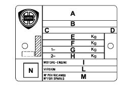

VEHICLE IDENTIFICATION DATA PLATE
- Path
- Technical Data > General information > IDENTIFICATION PLATES > VEHICLE IDENTIFICATION DATA PLATE
- Kind
- technical data / specifications
- Applies to
- all engines; all production periods
- Interactive page
- https://sloeber94.github.io/elrnDB-lYpsln/en/#/2427650
Applies to: all engines; all production periods
It is fitted to the front crossmember of the engine compartment
Applies to: all engines; all production periods

Applies to: all engines; all production periods
A. Manufacturer's name.
Applies to: all engines; all production periods
B. Homologation number
Applies to: all engines; all production periods
C. Vehicle type identification code.
Applies to: all engines; all production periods
D. Chassis manufacturing serial number.
Applies to: all engines; all production periods
E. Maximum authorised fully laden vehicle weight.
Applies to: all engines; all production periods
E. Maximum authorised fully laden vehicle weight plus trailer.
Applies to: all engines; all production periods
G. Maximum authorised weight on the first axle (front).
Applies to: all engines; all production periods
H. Maximum authorised weight on the second axle (rear).
Applies to: all engines; all production periods
I. Engine type.
Applies to: all engines; all production periods
L. Body version code.
Applies to: all engines; all production periods
M. Part number
Applies to: all engines; all production periods
N. Corrected smoke absorption factor (only for Diesel engines).